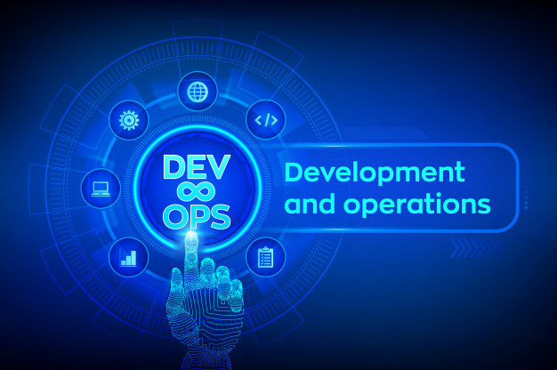
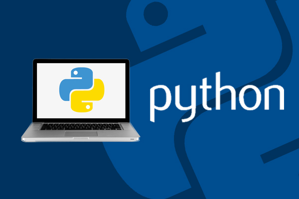
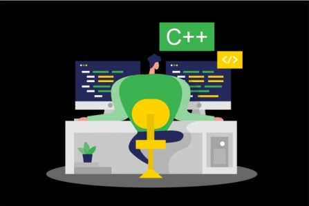

iOS-разработчик
12000 грн. Старая цена 16500 грн.
Легко ли начать разработку для iOS с нуля?
Конечно, вам будет гораздо легче, если вы умеете программировать, но создавать простые iOS-приложения можно даже без навыков программирования. Сейчас активно развиваются NoCode-технологии, и программы для iOS можно делать в PaintCode.
Подробнее
QA Engineer
15500 грн. Старая цена 18200 грн.
QA Engineer — ключевая фигура в любой команде. Спрос на рынке, высокие зарплаты и возможность развиваться делает эту профессию привлекательной. Тестировщик может вырасти до разработчика, тест менеджера или бизнес-аналитика
Подробнее

DevOps
8700 грн. Старая цена 10900 грн.
DevOps (от слов development + operations) — это методология, которая направлена на взаимодействие программистов и системных администраторов для повышения частоты выпуска релизов.
Подробнее

JS DEVELOPMENT
43350 грн. Старая цена 46000 грн.
Специальность JavaScript Developer – востребована как на биржах фриланса, так и в крупных IТ-компаниях. Зарплаты Java Script-разработчиков стартуют от 300 $! Удобные условия работы, гибкий график, комфортные офисы, корпоративное обучение, рост зарплаты – все это преимущества специализации JS-разработчика.
Подробнее
Android разработка
11600 грн. Старая цена 13277 грн.
Курсы андроид разработки – твой шанс заявить о себе.
По-этому в программу входят не только знание основ: Java SE, Android Core, но и наиболее популярные технологии: Retrofit 2, RxJava/RxAndroid, Dagger 2, Kotlin, а также паттерны проектирования.
Подробнее

Python
480 $ Старая цена 16750 грн.
Python является одним из самых популярных языков программирования. Он широко используется для back-end разработки, разработки программного обеспечения и data science.
Подробнее
PHP Developer
12000 грн. Старая цена 8000 грн.
PHP – простой и структурированный язык, с него удобно начинать в программировании, особенно тем, кто планирует развиваться в веб разработке. Язык PHP имеет широкое применение, поэтому, еще учась на курсе, Вы уже сможете зарабатывать и попробовать себя в небольших проектах или на фрилансе.
Подробнее

С++
12000 грн. Старая цена 10150 грн.
С++ - это компилируемый, высокоуровневый язык программирования. Может использоваться в большинстве сфер применения. Предназначающаяся для разработки разнообразных приложений. На сегодня – это один из популярнейших и известнейших языков.
Подробнее
McDonald’s
ГОТОВЫ ВЗЯТЬ беременного СТУДЕНТА =)
McDonald’s, «Макдо́налдс» — американская корпорация, работающая в сфере общественного питания, крупнейшая в мире сеть ресторанов быстрого питания, работающая по системе франчайзинга.
Подробнее